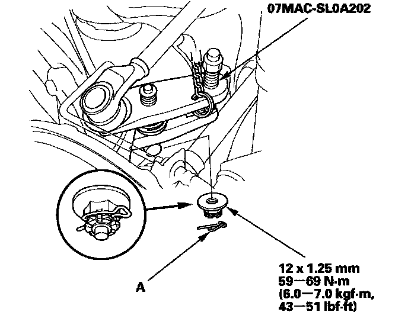

Upper Arm Removal & Installation
Upper Arm Removal/InstallationSpecial Tools Required
Ball joint remover, 32 mm 07MAC-SL0A102
1. Raise the rear of the vehicle, and support it with safety stands in the proper locations.
2. Remove the rear wheel.
3. Position a floor jack under the lower arm B. Raise the floor jack until the suspension begins to compress.
4. With active damper system: Remove the suspension stroke sensor from the upper arm (B).
5. Remove the lock pin (A) from the upper arm ball joint, then remove the nut (B).
NOTE: During installation, install the lock pin after tightening the castle nut.

6. Disconnect the upper arm ball joint from the knuckle using the ball joint remover.
7. Remove the flange bolt (A) from the vehicle, and remove the upper arm (B).
NOTE: Use new flange bolt during reassembly.
8. Install the upper arm in the reverse order of removal, and note these items:
^ Be careful not to damage the ball joint boot when connecting the upper arm to the knuckle.
^ Before connecting the ball joint to the knuckle, degrease the threaded section and tapered portion of the ball joint pin, the connecting hole, and the threaded section and mating surface of the castle nut.
^ First install all the components and lightly tighten the flange bolt and the castle nut, then raise the suspension to load it with the vehicle's weight before fully tightening to the specified torque values.
^ Torque the castle nut to the lower torque specification, then tighten it only far enough to align the slot with the hole in the stud. Do not align the castle nut by loosening it.
^ Refer to the stroke and stroke/headlight leveling sensor replacement to install the stroke sensor to the upper arm.
^ Before installing the wheel, clean the mating surface of the brake disc/drum and the inside of the wheel.
^ Check the rear wheel alignment, and adjust if necessary.
9. With active damper system: Do the memorizing rear suspension full rebound position.
10. With active damper system/Left side: Do the headlight initial position learning procedure.